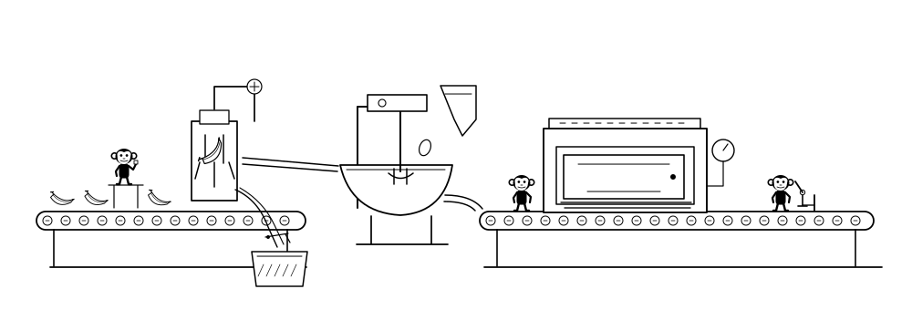
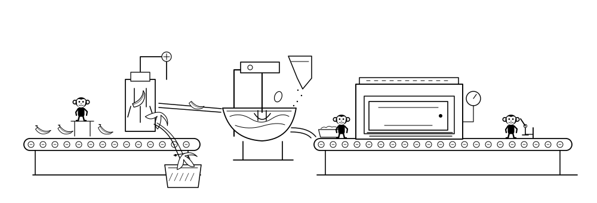
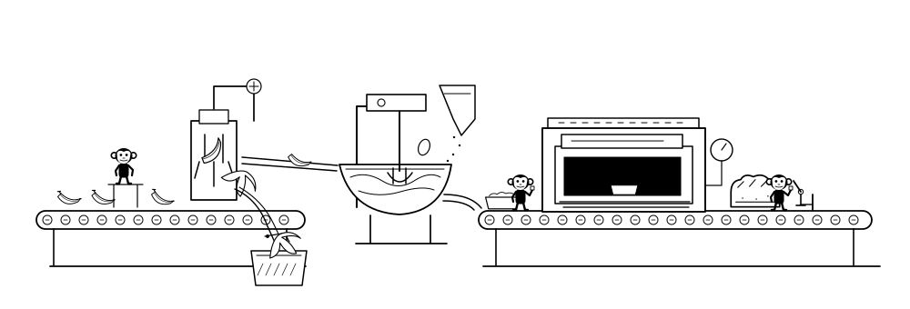
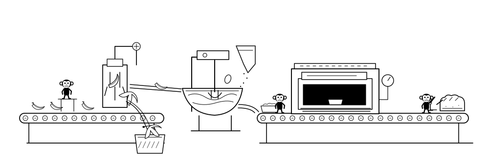
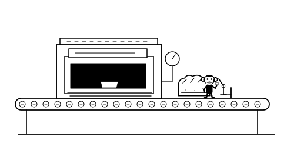

Bananas arrive
Whole fruit travels along the inlet belt. A tiny supervisor checks a sample; machinery remains the subject.
A small, eccentric production line where tiny monkey workers supervise automated peeling, mixing and baking. The machinery dominates. The judgement is a quiet inspection before the finished loaf is released.
Static concept for review. All drawings are strictly black and white. The 4% worker scale is retained. No animation or Stage 2 implementation has begun.

The one consequential pause happens at the finished-loaf inspection gate. The inspector checks the loaf and moves its release lever. Upstream mechanisms keep operating; this is not a game or strategic-choice simulator.
Understated humour: a peel needs a small mechanical flap to guide it into the bin. An optional slightly over-full loaf can be tested later; no exaggerated reaction is proposed.

Whole fruit travels along the inlet belt. A tiny supervisor checks a sample; machinery remains the subject.
The mechanical fork opens the skin. Peeled fruit passes down the chute; the skins drop into a separate bin.

The beater turns in a bowl, combining banana pieces and simple ingredient shapes. The spout fills a baking tin.
The tin passes into the oven. A tiny worker checks the temperature; the door opens and a finished loaf emerges.

A small release gate holds the loaf. The inspector pauses while the mixer and upstream machinery keep working.

The inspector moves the release lever. The loaf continues towards the exit as the next batch advances.
A 500-unit-wide crop shows the oven and final inspection. The worker keeps the same 40-unit geometry: approximately 27px tall in a 335px illustration. No close-up character or disproportionate enlargement is introduced.
All controls would sit below the drawing: pause/play and approval of the loaf. The still shown here is not interactive.

| Input | Proposed response |
|---|---|
| Watch | The production line cycles automatically. The inspector pauses briefly and releases the loaf in the authored loop. |
| Hover/focus a machine | Only its local fork, beater or indicator briefly speeds up; not the whole line. |
| Hover/focus a worker | A small task-related reach or glance. No face-led performance. |
| Approve loaf | A native click/tap/keyboard control requests approval at the next inspection. The worker then operates the gate. |
| Pause or reduced motion | Pause holds the scene in place. Reduced motion uses the complete static scene and non-spatial state changes. |
Approve or revise the monochrome drawing, recognisability of the production process, inspection pause and mobile crop. Stage 2 remains paused until that review.
Read the updated technical plan ↗ · Compare preserved versions ↗